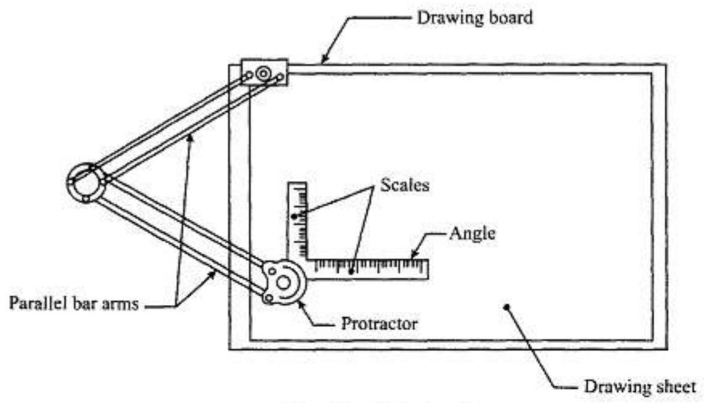
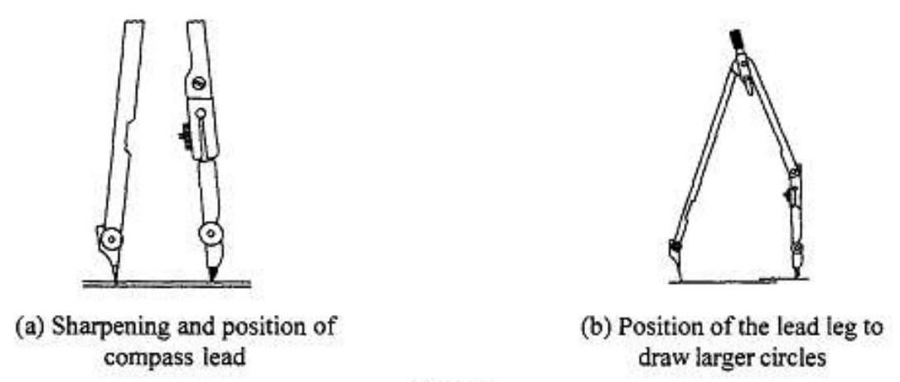
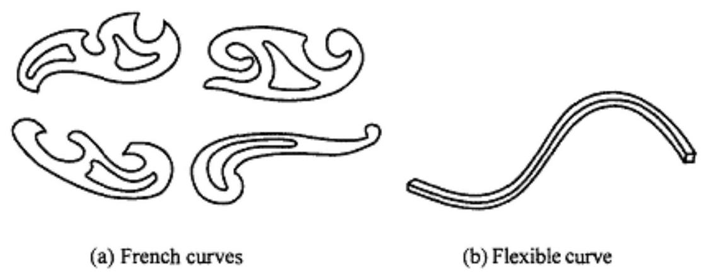
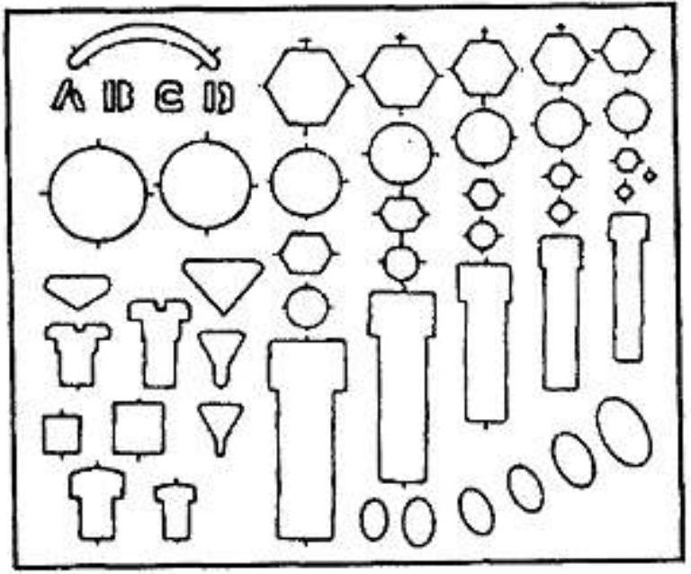
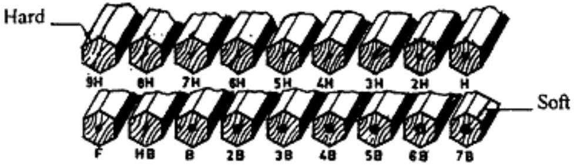
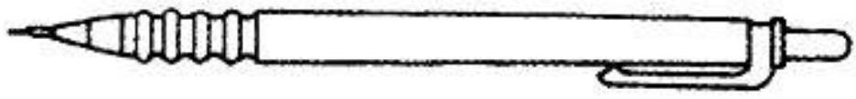

MPE 161 NOTES:
Drawing equipment and use of instruments
1.1 Introduction
Engineering drawing is a two dimensional representation of three dimensional objects. In general, it provides necessary information about the shape, size, surface quality, material, manufacturing process, etc., of the object. It is the graphic language from which a trained person can visualise objects.
Drawings prepared in one country may be utilised in any other country irrespective of the language spoken. Hence, engineering drawing is called the universal language of engineers. Any language to be communicative should follow certain rules so that it conveys the same meaning to everyone. Similarly, drawing practice must follow certain rules, if it is to serve as a means of communication. For this purpose, Bureau of Indian Standards (BIS) adapted the International Standards on code of practice for drawing. The other foreign standards are: DIN of Germany, BS of Britain and ANSI of America.
1.2 Role of Engineering Drawing
The ability to read drawing is the most important requirement of all technical people in any profession. As compared to verbal or written description, this method is brief and more clear. Some of the applications are: building drawing for civil engineers, machine drawing for mechanical engineers, circuit diagrams for electrical and electronics engineers, computer graphics for one and all.
The subject in general is designed to impart the following skills.
- Ability to read and prepare engineering drawings.
- Ability to make free - hand sketching of objects.
- Power to imagine, analyse and communicate, and
- Capacity to understand other subjects:
1.3 Drawing Instrument and Aids
The Instruments and other aids used in draughting work are listed below:
| 1. Drawing board | 7. French curves |
| 2. Mini draughter | 8. Drawing sheets |
| 3. Instrument box | 9. Pencils |
| 4. Set squares | 10. Templates |
| 5. Protractor | |
| 6. Set of scales |
1.3.1 Drawing Board
Until recently drawing boards used are made of well-seasoned softwood of about 25 mm thick with a working edge for T-square. Nowadays mini-draughters are used instead of T-squares which can be fixed on any board. The standard size of board depends on the size of drawing sheet size required.
1.3.2 Mini-Draughter
Mini-draughter consists of an angle formed by two arms with scales marked and rigidly hinged to each other (Fig. I. I). It combines the functions of T-square, set-squares, scales and protractor. It is used for drawing horizontal, vertical and inclined lines, parallel and perpendicular lines and for measuring lines and angles.
Fig. 1.1 Mini-draughter
1.3.3 Instrument Box
Instrument box contains 1. Compasses, 2. Dividers and 3. Inking pens. What is important is the position of the pencil lead with respect to the tip of the compass. It should be at least I mm above as shown in Fig. 1.2 because the tip goes into the board for grip by 1 mm .
Fig. 1.2
1.3.4 Set of Scales
Scales are used to make drawing of the objects to proportionate size desired. These are made of wood, steel or plastic (Fig.I.3). BIS recommends eight set-scales in plastic/cardboard with designations MI, M2 and so on as shown in Table 1.1 Set of scales

Fig. 1.3 Set of scales
| M1 | M2 | M3 | M4 | M5 | M6 | M7 | M8 | |
|---|---|---|---|---|---|---|---|---|
| Scale on one edge | $1: 1$ | $1: 2.5$ | $1: 10$ | $1: 50$ | $1: 200$ | $1: 300$ | $1: 400$ | $1: 1000$ |
| Scale on other edge | $1: 2$ | $1: 5$ | $1: 20$ | $1: 100$ | $1: 500$ | 1.600 | $1: 800$ | $1: 2000$ |
Note: Do not use the scales as a straight edge for drawing straight lines. These are used for drawing irregular curved lines, other than circles or arcs of circles.
| Scales for use on technical drawings (IS : 46-1988) | |||
|---|---|---|---|
| Category | Recommended scales | ||
| Enlargement scales | 50:1 5:1 | $20: 1$ 2:1 | 10:1 |
| Full size | 1:1 | ||
| Reduction scales | 1:2 | 1:5 | 1:10 |
| 1:20 | 1:50 | 1: 100 | |
| 1:200 | 1 : 500 | 1. 1000 | |
| 1. 2000 | 1. 5000 | 110000 | |
1.3.5 French Curves
French curves are available in different shapes (Fig. 1.4). First a series of points are plotted along the desired path and then the most suitable curve is made along the edge of the curve. A flexible curve consists of a lead bar inside rubber which bends conveniently to draw a smooth curve through any set of points.
Fig. 1.4
1.3.6 Templates
These are aids used for drawing small features such as circles, arcs, triangular, square and other shapes and symbols used in various science and engineering fields (Fig.l.5).
Fig. 1.5 Template
1.3.7 Pencils
Pencils with leads of different degrees of hardness or grades are available in the market. The hardness or softness of the lead is indicated by $3 \mathrm{H}, 2 \mathrm{H}, \mathrm{H}, \mathrm{HB}, \mathrm{B}, 2 \mathrm{~B}, 3 \mathrm{~B}$, etc. The grade HB denotes medium hardness of lead used for general purpose. The hardness increases as the value of the numeral before the letter H increases. The lead becomes softer, as the value of the numeral before B increases (Fig.l.6).
Fig. 1.6 Pencil Leads
The selection of the grade depends on the line quality desired for the drawing. Pencils of grades H or 2 H may be used for finishing a pencil drawing as these give a sharp black line. Softer grade pencils are used for sketching work. HB grade is recommended for lettering and dimensioning.
Nowadays mechanical pencils are widely used in place of wooden pencils. When these are used, much of the sharpening time can be saved. The number $0.5,0.70$ of the pen indicates the thickness of the line obtained with the lead and the size of the lead diameter.
Micro-tip pencils with 0.5 mm thick leads with the following grades are recommended.
Fig. 1.7 Mechanical Pencil
- HB Soft grade for Border lines, lettering and free sketching
- H Medium grade for Visible outlines, visible edges and boundary lines
- 2H Hard grade for construction lines, Dimension lines, Leader lines, Extension lines, Centre lines, Hatching lines and Hidden lines.
- 4H Hard grade for construction lines.